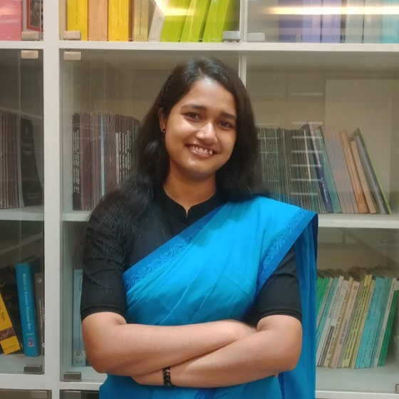

Welcome
I am a Research Analyst at the Bangladesh Institute of Development Studies (BIDS). I hold a BSS (2024) and an MSS (2025) in Economics from the University of Dhaka.
My research is in applied microeconomics, with a focus on energy, gender and time use in Bangladesh. Most of my work uses national household surveys, including the Time Use Survey 2021 and the Household Income and Expenditure Survey 2022.
My MSS thesis, supervised by Atonu Rabbani, asks who in the household gains time when a family switches to clean cooking fuel. You can read more on the research page.
I am always glad to hear from people working on similar questions. My details are on the contact page.